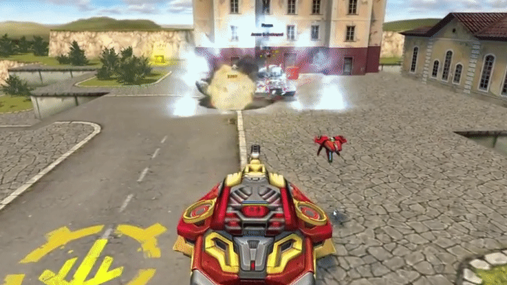

概括
由于其发动机永无止境的工作，十字军底盘可以在低空悬停在地面上。
当十字军受到敌人的火力攻击时，它会尝试将自己恢复到稳定的位置。
如果滚动限制超过某个最大值，引擎将失效，十字军将翻转。
底盘运动的独特之处在于它不转动，而是向给定方向扫射。
底盘将完全适合移动游戏。在 PC 上，控制底盘有两种不同的可能性：键盘和鼠标以及仅键盘。
仅在禁用键盘和鼠标控件的情况下使用时，坦克就像任何其他坦克一样被控制。
但是，当使用键盘和鼠标时，底盘会向前、向后和向一侧移动。
扫射方向取决于当前相机位置，向前、向后、向左和向右键也是如此。底盘也随着相机转动。
十字军独特的过速装置会射出锋利的冰柱。
它飞得非常快，撞到静态障碍物时会粉碎冰块，造成冰霜飞溅伤害。
冰柱会击中距离冰柱路径任意距离的坦克。
撞击时，它会对敌方坦克造成伤害并施加弱点效果。
车库中的描述
这种由强化装甲钢覆盖的底盘是最通用的。
中型底盘。它在水面上空盘旋，可以毫无困难地通过任何恶劣的地形。
利用它的过速装置可以发射在很远的距离内压制敌方坦克的大冰柱。
第二代悬停坦克：为了创造一个紧凑但强大的具有攻击可能性的底盘，使用了许多巧妙的解决方案。
第二代反重力的紧凑性使工程师能够为坦克装备足够的装甲，使其成为中型底盘，而不会降低其速度。
攻击能力由内置大炮提供。为了满足尺寸要求，安装了低温发生器而不是超级强大的武器。
它通过冷却水分几乎从零中制造一个外壳，然后射出一个大的穿甲冰柱。
被冰块击中后，对手的大炮将被冻结，即使不摧毁坦克也很容易完成。
装备改造

过速装置
极寒冰柱

皮肤

十字军标准
十字军 XT